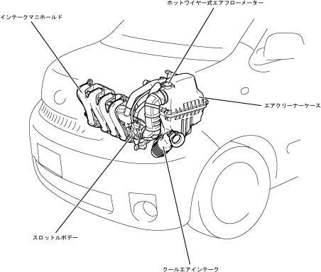

| インテーク全般 |
| ● |
前方吸気レイアウトの採用により，エアクリーナーホースの短縮が可能となり，吸気通路全体のコンパクト化をはかりました。
|
| ● |
小型・軽量なホットワイヤー式プラグインタイプエアフローメーターをエアクリーナーキャップに設けました。
|
| ● |
小型・軽量なアルミ合金製のスロットルボデーを採用し，軽量化をはかりました。
|
| ● |
インテークマニホールドは軽量な樹脂製で，構成部品を振動溶着とはめ込みで成型することにより吸気レゾネーター，およびサージタンクを一体化しました。
|
|  |